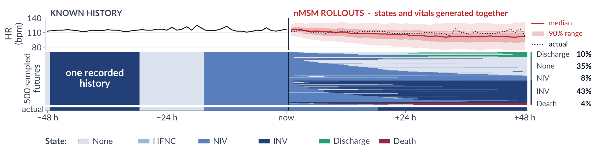
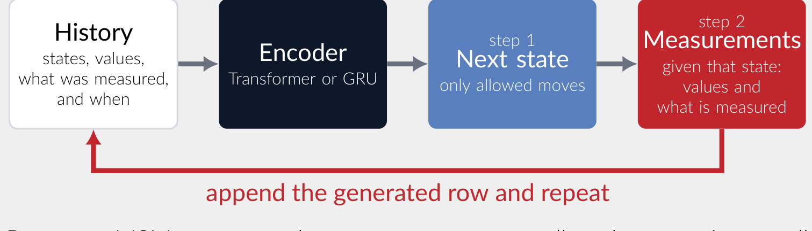
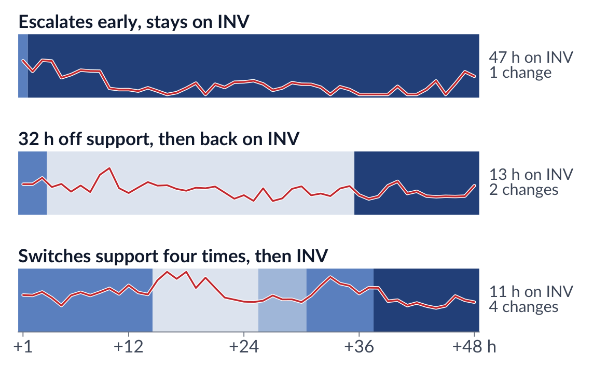
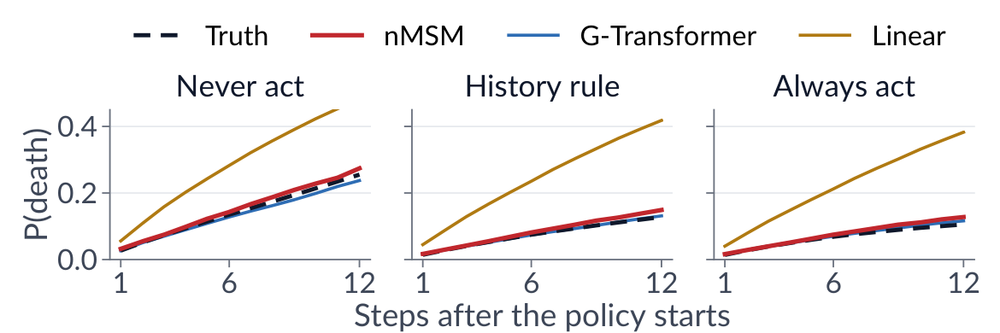
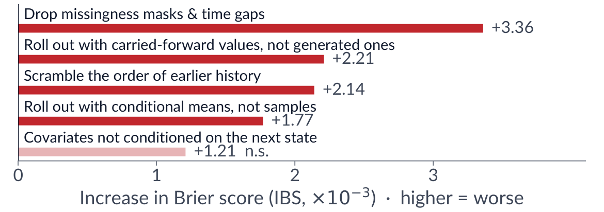
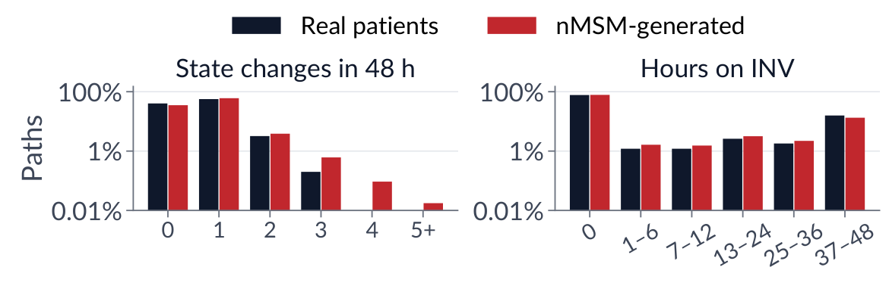

Clinical states depend on measurements that have not been taken yet. nMSM generates the next state
and the measurements that follow it, feeds them back, and repeats.

An illustrative MIMIC-IV ICU stay (selected, not representative). After 48 h of history, nMSM samples 500 futures.
Each row of the carpet is one sampled path, sorted by state at +48 h. Heart rate is generated jointly with the states.
Averaging the paths gives occupation forecasts. Keeping them gives trajectories.
Abstract
Multi-state models (MSMs) describe movement among mutually exclusive clinical states. Recent neural MSMs flexibly
estimate transition risks, but typically forecast states without modelling how longitudinal covariates evolve into
the future. This limits joint patient trajectory simulation, where generated covariates can influence subsequent
state transitions. We introduce nMSM, a discrete-time autoregressive model that encodes irregular patient histories
to jointly generate states, measurements, and observation patterns within an explicit multi-state graph. At each
step, future covariates are conditioned on the sampled next state and the completed row is fed back
autoregressively, closing the state–covariate feedback loop. On synthetic and clinical data, nMSM improves state
forecasting over baselines and matches selected path summaries, including transition counts and state durations,
supporting both marginal occupation forecasting and path-dependent simulation from a single learned process.
How it works: close the loop

Encode the irregular history: states, values, what was measured, and the gaps between measurements.
Sample the next state, using only moves the multi-state graph allows.
Sample the covariates given that state: values, and whether each one is measured.
Append the row and repeat. Generated measurements shape the next transition.
Why? Same state, different stories
A state-only forecast gives one number: the chance of ending on invasive ventilation (INV). The futures behind it can be very different.

Three sampled futures that end on INV. The line shows generated heart rate. Explicit trajectories
answer pathway questions directly: how often, how long, and through which states.
What if? Policy evaluation by rollout
Fix the action, roll out, compare. A treatment can change the generated measurements that drive later
transitions. This is longitudinal g-computation inside the same model.

Synthetic simulator with known truth, 128 histories, step 12. The bars show the absolute error in the
always-vs-never effect on death. nMSM's covariate RMSE is higher than G-Transformer's (.0898 vs .0729). Clinical
use also requires consistency, exchangeability and positivity.
Break the loop → worse forecasts

MIMIC-IV, IBS change relative to a matched nMSM-T. All ablations except the last are significant
(p < .05). The generated covariates are not a side output. They carry the state forecast.
Generated paths look real

MIMIC-IV, 500 held-out stays × 500 paths. 98.54% of generated measurements lie within preprocessing
ranges.
Takeaways
Better forecasts
Best IBS and iAUC against multi-state and direct baselines on synthetic data, MIMIC-IV (50,873 ICU stays) and SAIL (28,321 people).
One model, two jobs
Occupation forecasts, pathways and what-ifs all come from one fitted process.
Fast if needed
A distilled occupation head cuts inference from 2336.49 to 1.41 ms per history.
Limitations
Rollout errors can accumulate. Emissions are Gaussian and the time grid is fixed.
Code
The repository contains the model, preprocessing, training and evaluation code for the primary synthetic and
MIMIC-IV comparison. It contains no patient data and no trained weights. Every command prints its plan
unless you pass --execute.
# install (after installing a PyTorch build for your platform)
python -m pip install -e .
# data
python reproduce.py prepare-synthetic --execute
python reproduce.py prepare-mimic --raw-root /path/to/files --execute
# train and evaluate
python reproduce.py train --dataset synthetic_full --device cuda --execute
python reproduce.py train --dataset mimic --device cuda --execute
python scripts/summarize_primary.py --runs runs --data-root data --output results
@inproceedings{ries2026nmsm,
title = {{nMSM}: A Neural Multi-State Model for Joint State--Covariate Trajectory Forecasting},
author = {Ries, Maxmillan and Mohan, Karthik and Guthrie, Bruce and Seth, Sohan},
booktitle = {Proceedings of the Machine Learning for Health (ML4H) Symposium},
series = {Proceedings of Machine Learning Research},
year = {2026}
}